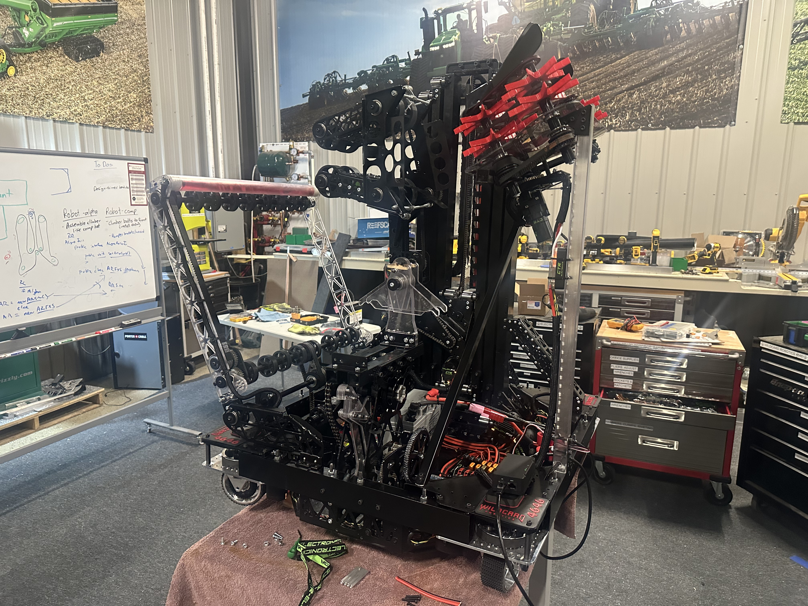

FIRST Robotics Competition is for high school students to learn about engineering. Since this is a team based in Polk City, Iowa, it is important that you are local in order to participate. If you are eligable, contact Wildcard Robotics team 4646!
For more information, visit FIRST's page.
